AI Academy · Level 1 · Grade 6 · Week 5 · Student lesson
Pictures Become Numbers
Learn to understand, design, build, test and explain AI systems responsibly.
Project: Helpful Classroom Sorter
Before you start
Week 2: stored input and its interpretation are different stages.
Plan time to read, investigate and explain. Keep predictions separate from observations.
Student lesson · 1 of 16
Your mission
Your learning target
I can encode and reconstruct a small image using an explicit grid convention.
I can explain why pixel counts alone cannot recover an arrangement.
I can distinguish numerical image data from a model's interpretation of that data.
Remember before reading
Close your notes first. A rough first answer helps us choose the right starting point; it is not a score for your ability.
Without opening the old lesson, explain one key idea from Rules or Learned Patterns?. Give an example and a mistake that the idea helps you avoid.
Without opening the old lesson, explain one key idea from Input, Process, Output. Give an example and a mistake that the idea helps you avoid.
After trying, check the relevant lesson or ask your teacher. Change the part of your explanation that the evidence shows was wrong.
A digital image is a grid of measured color values.
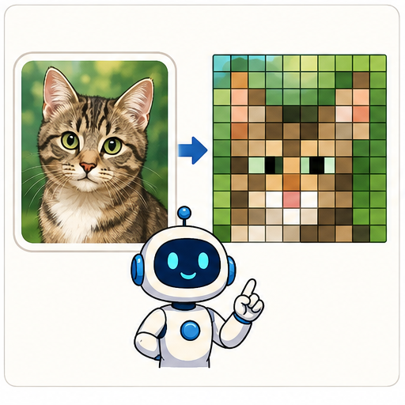
Learner name:
Readiness for the connected explanation
Two thresholds can agree on all fitting examples but disagree on a new input. Does zero fitting error identify one uniquely correct rule?
This week’s end goal
By the end, I can encode pixel positions and show why a count cannot reconstruct a picture.
Student lesson · 2 of 16
Notice the evidence
PICTURE STORY
Look Closely Before You Explain
Pictures give clues; evidence tells us what the clues mean.

What do you notice?
Name three visible details without explaining them yet.
Circle the detail most connected to the system's decision.
Name one detail that may be decoration or distraction.
Make a first prediction and state the clue that supports it.
My observations, prediction, and evidence:
A closer explanation
Imagine sending a small black-and-white sign using only numbers. We can divide the sign into a grid, record 1 for a black square and 0 for a white square, and read each row from left to right, starting at the top. The receiver needs the width, height and these conventions to reconstruct the same arrangement.
A pixel is a position with a recorded value. In our simplified binary image, one value selects black or white. Other image formats can record brightness levels or multiple colour channels. The convention 1 means black belongs to this exercise; it is not a universal rule for every digital image.
Encoding a picture does not recognise what it depicts. A program can store or display the numbers without calling the image a letter, an arrow or a person. Interpretation is another operation, just as displaying a book title was different from reading the entire book in Week 2.
Student lesson · 3 of 16
See how it works
VISUAL MECHANISM
Input → Process → Output
Follow the information instead of imagining magic inside the machine.
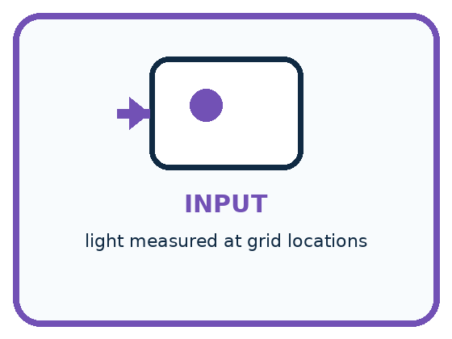
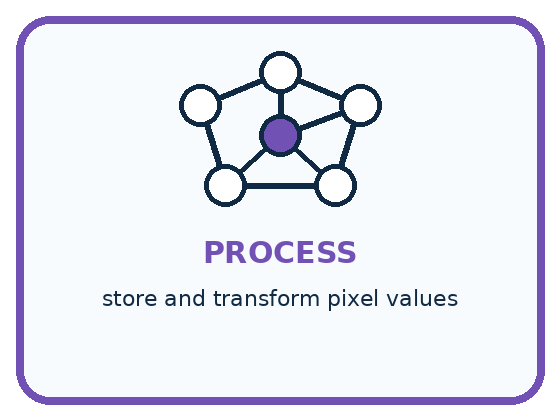
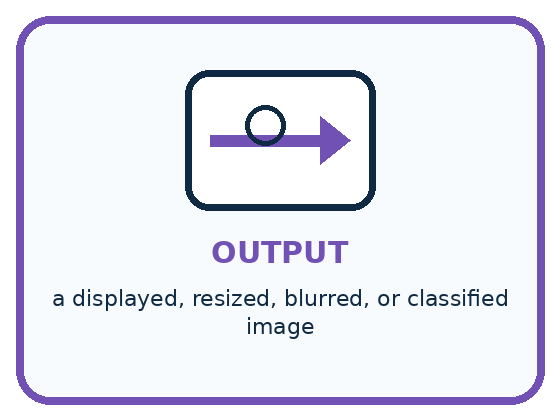
INPUT light measured at grid locations
PROCESS store and transform pixel values
OUTPUT a displayed, resized, blurred, or classified image
Draw a fresh example with all three stages:
A closer explanation
A three by three binary image
Read rows top to bottom. Within each row read left to right. 1 is black and 0 is white.
The first row is 0,1,0, so only its middle pixel is black. The second row is 1,1,1, so all three are black. The third row repeats the first. This reconstructs the displayed cross-like pattern under our convention.
A flattened record would be 0,1,0,1,1,1,0,1,0. Without the grid dimensions, the same nine values could also be drawn in one row of nine. Keep the shape information with the values. Width times height counts pixels; it does not tell us their contents.
Connect the picture and the explanation
Point to the input, the deciding step and the result in this week’s visual. Explain the same step in ordinary words. A picture helps when you can say what each part represents.
Student lesson · 4 of 16
Compare the cases
PICTURE GALLERY
Four Cases, Four Clues
Use the visual cue, then read the evidence carefully.
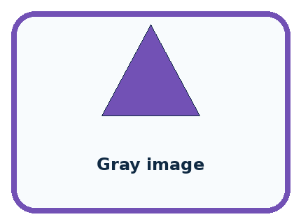
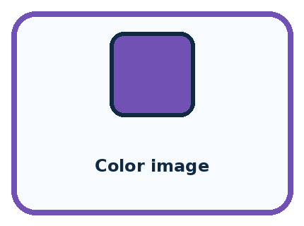
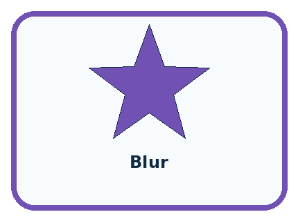
CASE 1 — Black/white icon Clue: 0 and 1 values. Meaning: two possible brightness levels.
CASE 2 — Gray image Clue: one brightness number per pixel. Meaning: many light levels.
CASE 3 — Color image Clue: red, green, blue values. Meaning: three channels.
CASE 4 — Blur Clue: nearby values are mixed. Meaning: detail is reduced.
Which two pictures are easiest to confuse? What evidence separates them?
Change one thing in the pictured case
Change: Change A’s bottom-left pixel from 0 to 1.
Prediction: A now has four dark pixels; its row encoding is 101 / 110.
Reason: Exactly one light pixel becomes dark; the other five positions remain unchanged.
Student lesson · 5 of 16
Words that unlock the idea
VOCABULARY
Words You Can See and Use
The badge is a memory cue; the definition does the real thinking work.
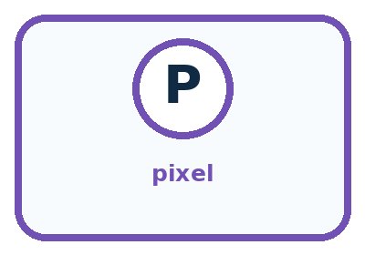
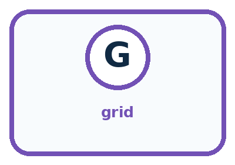
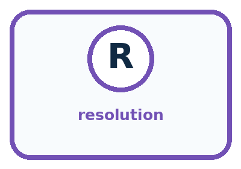
| Word | Meaning | My example |
|---|---|---|
| pixel | one picture element in a grid | |
| grid | rows and columns that locate values | |
| channel | one measured color component | |
| resolution | number of pixels used to represent an image |
Misconception detective
CLAIM TO REPAIR The computer stores a real cat inside the image file.
Use one vocabulary word and one piece of evidence to repair it:
Words used in the closer explanation
| Word | Meaning |
|---|---|
| Encoding | A convention for representing information with symbols or numbers |
| Spatial arrangement | Where elements are located relative to one another |
| Interpretation | A meaning or category assigned to a representation using a rule, model or human judgment |
Student lesson · 6 of 16
Follow a worked example
WORKED EXAMPLE
Watch the Reasoning, Not Just the Answer
Every step connects a claim to observable evidence.

STEP 1 — OBSERVE light measured at grid locations
STEP 2 — TRACE store and transform pixel values
STEP 3 — CONCLUDE a displayed, resized, blurred, or classified image
What new evidence could change this answer?
A closer explanation
Suppose we discard the row records and retain only black pixel count=5. That count matches the cross, but it also matches rows 1,1,1 then 1,1,0 then 0,0,0. The second arrangement fills the top row and two positions below it. Both have five black pixels and nine pixels in total, yet they are different images.
| Stored information | What it establishes | What remains unknown |
|---|---|---|
| Width 3 and height 3 | There are 9 positions | The value at each position |
| Black pixel count 5 | Five positions are black under this code | Which five positions |
| Dimensions and all three ordered rows | The full binary grid under this convention | What a viewer or model will call the picture |
A pixel count can still be a useful feature for some tasks. For example, it can separate empty grids from grids with at least one mark. But it cannot separate every shape. To judge a feature, ask whether it retains the distinctions required by the task.
Learn from the worked case
Cover the result before checking it. Say what is given, choose the procedure, and follow one step at a time. Then uncover the result and explain your first mismatch. Ask why a step is allowed, not only what number it produces.
A pictorial worked case: Pictures Become Numbers
Two fictional 2-by-3 pixel badges contain the same number of dark squares.
The facts we will use
Dark=1, light=0; rows are read top to bottom, left to right.
Badge A rows: 1,0,1 / 0,1,0. Badge B: 1,1,1 / 0,0,0.
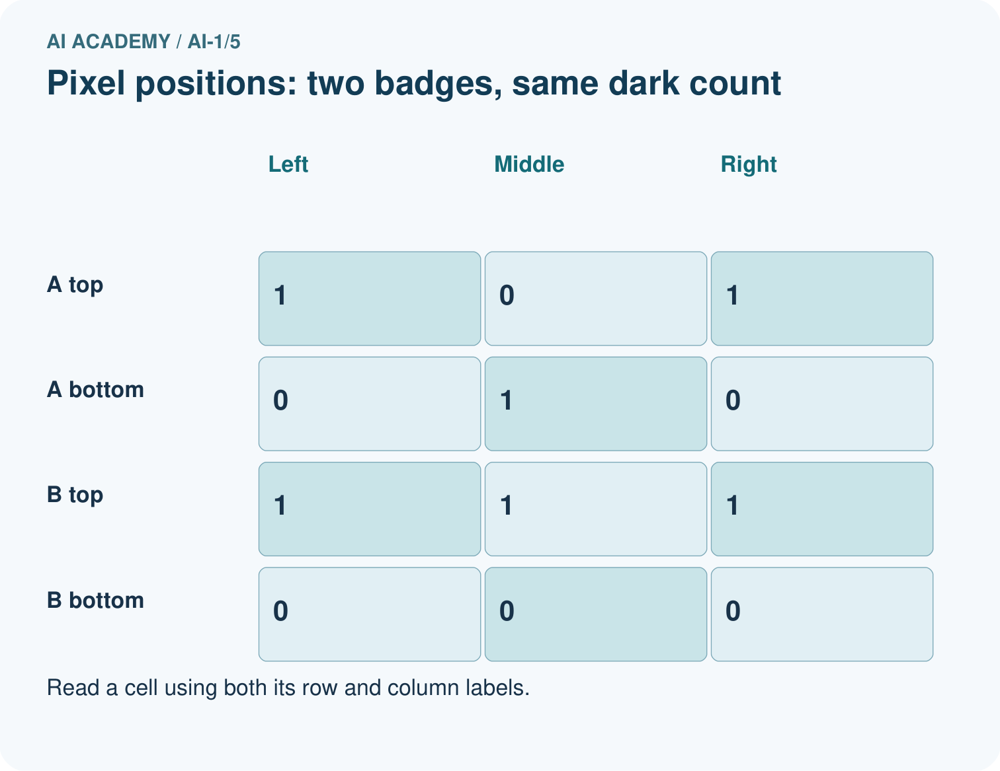
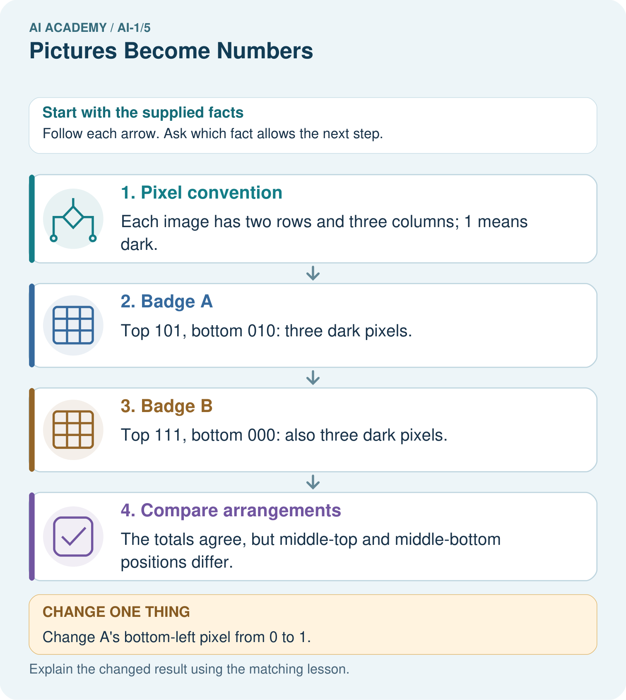
Read the picture one step at a time
Why this result follows
A grid preserves where each brightness belongs. Adding the six values preserves only the dark count, which is 3 in both images. The total therefore cannot distinguish these badges. Dimensions and reading order belong to the representation, not to an optional caption.
What this example does not establish
This toy binary encoding does not include real photographs’ colour channels, compression or illumination effects.
Read the labelled picture: Find a position where the original badges differ, then read the changed A back as a picture.
Change one thing: Change A’s bottom-left pixel from 0 to 1. Predict the result before checking the explanation. What remains the same?
Student lesson · 7 of 16
Find and repair a mistake
COMPARE
Same Result, Different Reason
A comparison helps reveal the true concept boundary.
| Case | Evidence | What it shows |
|---|---|---|
| Black/white icon | 0 and 1 values | two possible brightness levels |
| Gray image | one brightness number per pixel | many light levels |
| Color image | red, green, blue values | three channels |
| Blur | nearby values are mixed | detail is reduced |
Repair two tempting claims
CLAIM A The computer stores a real cat inside the image file.
Repair:
CLAIM B More pixels always guarantee a correct classification.
Repair:
A closer explanation
Higher resolution offers more positions for recording detail, but it does not guarantee a useful image. A larger blurry image can still hide a feature, and a cropped image can omit it entirely. A model's label also depends on what it was fitted to distinguish and the conditions represented in its examples.
Keep claims at the right stage. These nine values encode this grid is a reconstruction claim. This grid depicts a plus sign is an interpretation. This sign tells a person what to do adds context and authority. One does not automatically establish the others.
Student lesson · 8 of 16
Practise together
GUIDED PRACTICE
Try It, Check It, Explain It
Use support now so you can succeed independently later.

Explain how the picture story demonstrates this idea: A digital image is a grid of measured color values.
Use a fresh example to explain pixel.
Trace a new input → process → output example.
Find and repair the error in: More pixels always guarantee a correct classification.
Invent one edge case and name the safe response.
A closer explanation
Use width 3, height 2 and rows 1,0,1 then 0,1,0. Draw two rows of three squares and fill exactly the positions marked 1. Check by reading your drawing back into numbers. A round trip from code to drawing to code can reveal a swapped row or a missed pixel.
If an image classifier mislabels a picture, first inspect the input representation. Was the width correct? Were the rows reversed? Did the program use the intended colour convention? A later classifier cannot reliably repair every mistake in how its input was prepared.
Practise with less help: Preserve the missing field
Use workbook W2 for the connected example “Images as numerical grids”. First fill the input and rule boxes. Try the middle steps before asking for a hint. After a hint, try the next step yourself.
| Plan | Do | Check |
|---|---|---|
| What is given? Which rule or procedure applies? | Record each intermediate step. | Does the result follow? What remains unknown? |
Explain your trace to a partner. Your partner points to one step to check. Swap roles on the next case. Each person writes their own explanation.
Check your reasoning
Use the worked case for Images as numerical grids. Proposed explanation: “The number one always means black”. Decide whether this explanation is supported. Point to the step or supplied fact that decides; explain your repair if needed.
Answer on your own before discussion. If you are unsure, say which step you need help with.
Explain the picture
Find a position where the original badges differ, then read the changed A back as a picture.
This is supported practice. Keep the separately named independent case for an attempt before feedback.
Student lesson · 9 of 16
Run the investigation
EXPLORER LAB
Pixel Picture Decoder
Predict first, test honestly, and explain what the evidence means.

State your prediction before the result is known.
Complete the task: Decode a tiny pixel picture and predict a blurred version.
Keep a normal case and an edge case clearly separated.
Record what happened—even when it does not match your prediction.
Explain the result, one limitation, and the next useful test.
| Case | Prediction | Observed result | What it means |
|---|---|---|---|
| Normal | |||
| Edge |
Plan → try → check
Before trying: what do I expect, and why? While trying: which step could first go wrong? Afterwards: what did I actually observe, and what should change? Keep “not run” if you only traced the procedure.
Student lesson · 10 of 16
Build your understanding
PRACTICE LADDER
Climb from Recall to Defense
Each step asks for a stronger kind of understanding.

RECALL Define pixel.
EXPLAIN A digital image is a grid of measured color values.
TRACE Show the input, process, and output.
DIAGNOSE Repair: The computer stores a real cat inside the image file.
TRANSFER Apply the idea to a new home or classroom case.
CREATE Design one revealing test.
DEFEND Give a claim, evidence, mechanism, limit, and safe action.
Student lesson · 11 of 16
Connect your project
PROJECT
Helpful Classroom Sorter
Build one coherent system across the year, one evidence-based decision at a time.

What real classroom need does this serve?
What information is necessary—and what should stay private?
What happens inside the process?
What normal and edge cases will you test?
When should it say not sure or ask a person?

My project decision:
Evidence for your project
If the sorter uses images, retain dimensions and arrangement rather than assuming a dark-pixel count describes shape.
Student lesson · 12 of 16
Show what you know
MASTERY
Fresh-Case Independent Proof
Complete this after teaching and guided practice have ended.

□ Name or draw the fresh case.
□ Trace input, process, and output.
□ State the conclusion and strongest evidence.
□ Name one limit, failure, missing clue, or fairness/privacy concern.
□ Explain one safe next action or improvement.
Independent evidence:
My level: □ Not yet □ With one hint □ Independently □ I can teach it
Student lesson · 13 of 16
Study a complete case
Week 5 Worked case
Use the supplied details to practise the weekly concept before attempting the independent question. This case extends the illustrated lesson.
The situation
A 2 by 2 image has rows [0,1] and [1,0]. Zero means white and one means black.
The question
Draw it, then change the top-left value to 1.
Worked explanation
Initially top-right and bottom-left are black. The change produces three black squares. Pixel values encode an image; object recognition is a separate interpretation.
Explain it in your own words
Which detail supports the answer, and why does it matter?
Trace the supplied case visually
A picture represented by four numbers
| Evidence or stage | Value or result |
|---|---|
| Top left | 0 |
| Top right | 1 |
| Bottom left | 1 |
| Bottom right | 0 |
A 2 by 2 image has rows [0,1] and [1,0]. Zero means white and one means black.
Draw it, then change the top-left value to 1.
Initially top-right and bottom-left are black. The change produces three black squares. Pixel values encode an image; object recognition is a separate interpretation.
Student lesson · 14 of 16
Try a new case independently
Independent case: Design a new counterexample
Create two different images of width 4 and height 2, each with exactly three black pixels. Write both complete row encodings. Explain which fact their shared count retains and which difference it discards.
Attempt this case before feedback. Record any help. Earlier examples below are further practice; a case already practised with feedback cannot establish fresh transfer.
Week 5 Independent application
Close the worked explanation. Apply the idea to this different question without copying.
Use 0 for dark and 1 for light. Draw a two-by-two image with rows [1,0] and [0,1]. Then change only the bottom-left pixel to light. Which number changes?
My answer, with a trace, calculation or supporting evidence
Create and test
Change one relevant detail. Predict the result before testing. Include a boundary or missing-information case when it helps reveal a limit.
My changed input and expected result
Connect to your project
Choose which visible item features the Classroom Sorter may represent as image measurements and name one feature that lighting could distort.
The evidence I will keep
Your teacher has the independent answer and scoring criteria. Complete the matching workbook week to keep your practice evidence together.
Transfer practice from the original programme
Encode a 2×3 monochrome image with top row black–white–black and bottom row white–black–white, using 1 for black. A partner reads columns first. Explain why the image changes although the six values are identical.
Use feedback to improve
Attempt the independent case before hints. Record whether you worked alone, used a hint or followed a model. After feedback, fix the first unsupported step and explain why it changed. A later check uses a changed case, not a copied answer.
Student lesson · 15 of 16
Your lesson route
Start with this question: Two fictional 2-by-3 pixel badges contain the same number of dark squares.
| By the end, I can | How I will show it |
|---|---|
| Encode and reconstruct a small image using an explicit grid convention | Explain the deciding step, show a trace or test, and state one limit. |
| Explain why pixel counts alone cannot recover an arrangement | Explain the deciding step, show a trace or test, and state one limit. |
| Distinguish numerical image data from a model's interpretation of that data | Explain the deciding step, show a trace or test, and state one limit. |
Remember → watch and explain → try with help → investigate → try independently → keep project evidence. Your teacher may spread this lesson across several classes.
Keep your first prediction. Compare it with what the evidence shows and explain any change.
Student lesson · 16 of 16
Finish and return
Close your notes. Explain this goal in your own words: Encode and reconstruct a small image using an explicit grid convention
If you are unsure, return to the worked picture and explain one arrow. If you are ready, change an input or assumption and justify your prediction.
Save your workbook evidence. At the next review, try a different case before opening your old answer.